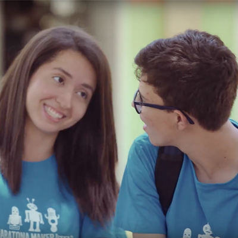
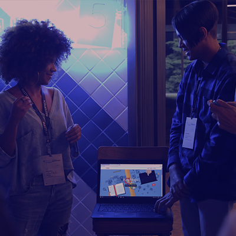
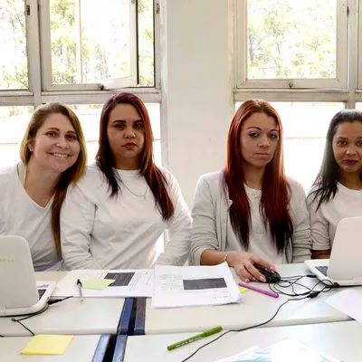

MARATONA MAKER

A Maratona Maker foi patrocinada pela Intel e teve como objetivo
disseminar conceitos tecnológicos e cultura maker para crianças e
jovens entre 5 e 18 anos em todas as regiões do país. O projeto
muniu os participantes com conceitos e ferramentas ágeis com o
objetivo final de criar produtos tecnológicos que impactassem as
comunidades e a qualidade de vida dos indivíduos da região.Fomos
para muitas cidades, dentre elas Porto Velho, Manaus, Ponta Porã,
São Paulo, Campo Grande, Aquidauana, Rio de Janeiro, Nova
Andradina, Novo Hamburgo, etc. Além disso, atuamos junto aos
professores, oferecendo ferramental para que pudessem desenvolver
tais conteúdos em suas regiões, tornando-os multiplicadores da
metodologia e garantindo a continuidade dos projetos.
ESTAÇÃO HACK

A Estação Hack é uma iniciativa do Facebook no Brasil e busca
desenvolver habilidades de programação em jovens entre 16 e 25
anos. Somos responsáveis pela realização desde 2017. Em São Paulo,
o projeto acontece, inicialmente, com um encontro de dois dias aos
finais de semana para sensibilizar o publico sobre o tema e
selecionar os interessados para a Academia Mastertech, que possui
um currículo com duração de 80 horas. Ao fim do curso, os alunos
apresentam os projetos desenvolvidos com base em conceitos ágeis.
No total, o programa já formou mais de dois mil alunos na capital.
Em 2018, colocamos o pé na estrada e partimos para edições em
Salvador, Recife, Brasília, Belo Horizonte, Florianópolis, Manaus
e Rio de Janeiro, impactando mais de 500 jovens.
CAIEIRAS
A parceria com a prefeitura de Caieiras aconteceu por conta da
criação de um polo tecnológico na cidade. O primeiro passo é a
capacitação profissional. Nosso projeto visa a implementação de
currículo tecnológico alinhado com as diretrizes da Base Nacional
Comum Curricular (BNCC). A base determina que, ao longo da
educação básica, os estudantes devem desenvolver dez competências
gerais, dentre elas, o uso das tecnologias digitais. Fomos
responsáveis pela formação de cinquenta desenvolvedores Full Stack
(programação back-end e front-end), entre 16 e 25 anos,
matriculados no Ensino Médio ou Superior.
CCP BUTANTÃ

Em pareceria com a Secretaria de Administração Penitenciária e a
Assessoria Especial de Relações Internacionais desenhamos e
executamos um currículo de programação em HTML, CSS e Javascript.
A turma tinha 25 mulheres em regime semiaberto que desenvolveram
projetos com base em conceitos da metodologia ágil. Tudo foi
executado com lápis, papel e computadores sem conexão com a
internet. Todos os sites foram programados por elas in loco. Em
grande parte, os projetos foram e-commerces, o que revela a força
do empreendedorismo e a capacidade de geração de renda do
conhecimento tecnológico em todos os lugares para todas as
pessoas.
❮
❯